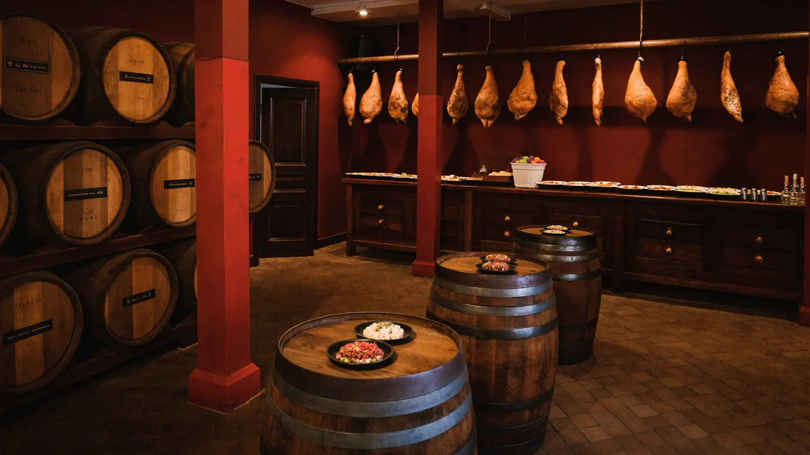
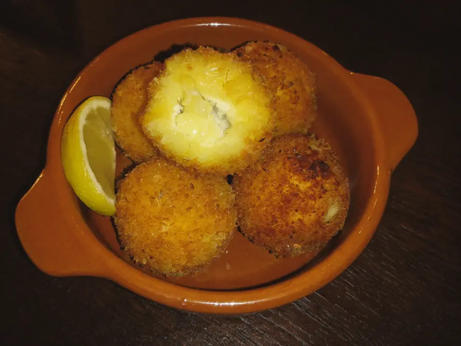
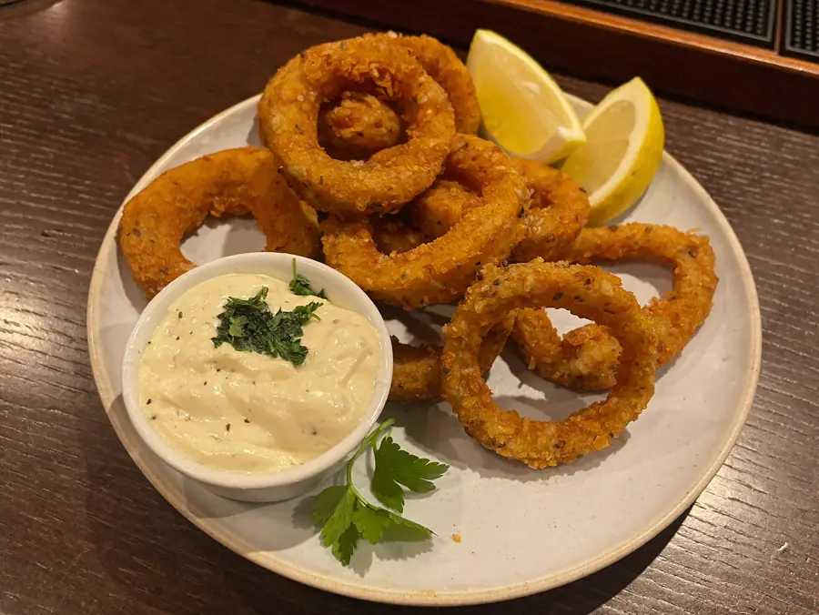
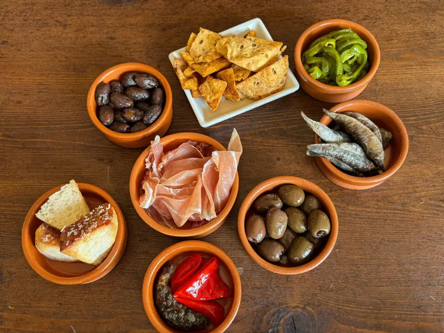

Bodega de barrio en Roses. Género fresco cada día, raciones que se notan y un dueño que la gente nombra en las opiniones.

La casa
Bodega El Toro está en el Carrer de Sant Sebastià, 12, en Roses. Tapas tradicionales hechas con género que entra fresco cada día — no congelado, no de la semana pasada.
Y hay un detalle que se repite en lo que escribe la gente y que no se puede comprar: nombran al dueño. Hablan de lo amable que es, de la acogida, del trato. En hostelería, eso vale más que cualquier campaña.
Las tapas

De las que se piden en todas las mesas, y de las que se repiten.

Frescos del día, rebozados al momento.

Raciones generosas y bien hechas. Es lo que más se repite en las opiniones.
No es una frase de escaparate: es lo que los clientes destacan cuando explican por qué vuelven. La calidad y la cantidad, las dos.
Reservar
Lo dicen los propios clientes: conviene reservar para tener mesa. Eso es una buena señal — y a la vez el motivo por el que hace falta un sitio propio donde alguien pueda ver la casa y llamar antes de plantarse en la puerta.
Cómo llegar
En el Carrer de Sant Sebastià, en Roses. Para reservar, llamada o WhatsApp.
Llamar ahora Abrir en MapsPreguntas frecuentes
Es recomendable. Los propios clientes lo dicen: se llena y conviene asegurar mesa.
Las croquetas y los calamares, y en general el surtido de tapas.
Sí, entra fresco cada día. Es de lo que más destacan los clientes.
Generosas — es una de las cosas que más se repite en las opiniones.
En el Carrer de Sant Sebastià, 12, en Roses.